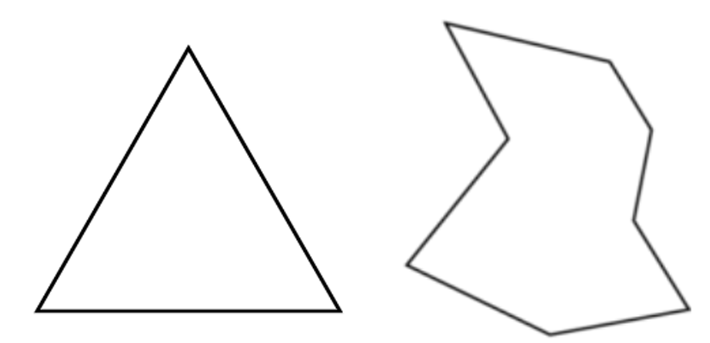
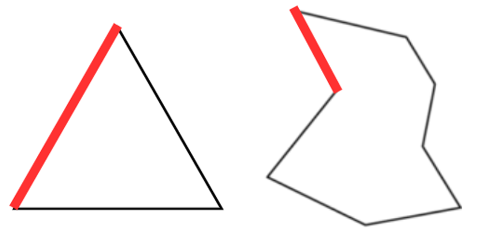
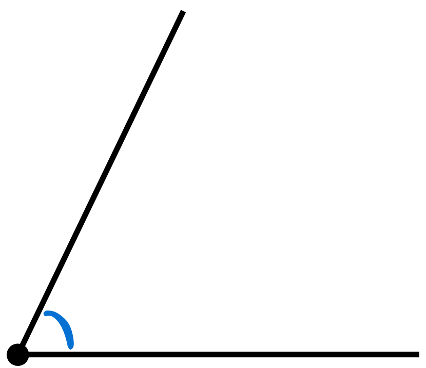

Parte de la matemática que estudia las figuras y sus propiedades. En palabras más simples: si ves triángulos, cuadrados, círculos o incluso una línea recta, estás viendo geometría. La geometría nos ayuda a entender las formas, tamaños y posiciones de las figuras en el espacio.
Como con todo tema, se debe comenzar con lo más simple para ir entendiendo más poco a poco, pero entonces ¿Qué es lo más simple de la geometría?
Si ves esas dos figuras podrás notar que una es más simple que la otra, la de la izquierda es un triángulo y la de la derecha una figura irregular. Sin embargo, concentrémonos en lo que ambas tienen en común
Es la parte más básica de la geometría, piensa en ella como un ladrillo ¿Por qué? Porque a partir de ella es que podemos formar todo. Te invito a agarrar un lápiz y hacer una línea sencilla.
Se verá como se muestra ahí arriba, es bastante simple ¿No? Bueno lo que ves ahí arriba es un segmento, una línea con un inicio y un fin, aunque hay otros dos tipos de líneas.

La recta es una línea que no tiene ni inicio ni fin. Como no podemos dibujar algo infinito, en geometría se representa con flechas en ambos extremos.
El rayo es una línea que tiene inicio pero no tiene un fin. Se dibuja con una flecha en uno de sus extremos.
Vamos a dibujar dos segmentos y a unirlos en un punto:
Felicidades! Acabas de dibujar un ángulo. El ángulo es la segunda base de la geometría. Al unir dos segmentos se forma un ángulo, que es esa “apertura” entre ambos segmentos. Los ángulos se pueden medir de muchas formas, pero la más común es en (°).
Así como hay tipos de líneas, también hay tipos de ángulos y conoceremos tres:
1. ¿Qué estudia la geometría?
2. ¿Cuál de los siguientes elementos es la base de la geometría?
3. ¿Qué tipo de línea tiene un inicio y un fin?
4. ¿Cuál de las siguientes líneas no tiene ni inicio ni fin?
5. ¿Qué tipo de línea tiene inicio pero no fin?
6. ¿Qué ocurre cuando unimos dos segmentos en un punto?
7. Un ángulo que mide exactamente 90° se llama:
8. Si observas un ángulo más pequeño que un ángulo recto, ¿qué tipo de ángulo es?
9. Si un ángulo mide más de 90° pero menos de 180°, se llama: